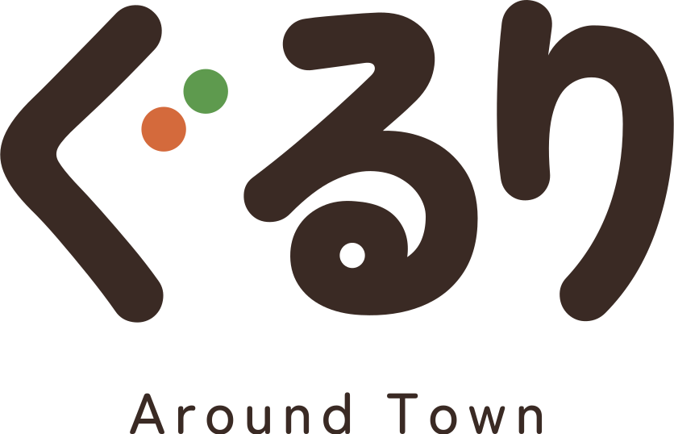

01
お店の方の言葉で
紹介文は、お店の方からいただいた言葉をそのまま載せています。店先で少しお話を聞くような気持ちで、読んでみてください。

毎日通る道にも、まだ扉を開けたことのないお店があります。
ぐるりは、そんなお店をひとつずつ紹介しているページです。
紹介文は、お店の方からいただいた言葉をそのまま載せています。店先で少しお話を聞くような気持ちで、読んでみてください。
お店の情報は毎月更新し、あたらしく加わったお店もご紹介しています。
カフェのとなりに、かばん屋さん。花屋さんのとなりに、フォトスタジオ。業種や市の境目にとらわれず、近くの気になるお店を並べています。
訪れた方が、心から楽しんでくださること。
その時間が、お店の力になり、
まちの潤いにつながっていくこと。
ぐるりが目指しているのは、そんな景色です。
ぐるりは、人と地域に目を向けたページです。人と技に目を向けたページが、「わざのひと」です。ひとつの技を長く磨いてきた方たちを、その技とともに紹介しています。